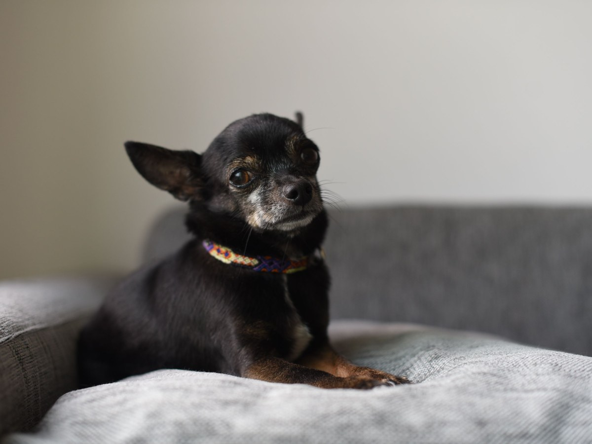
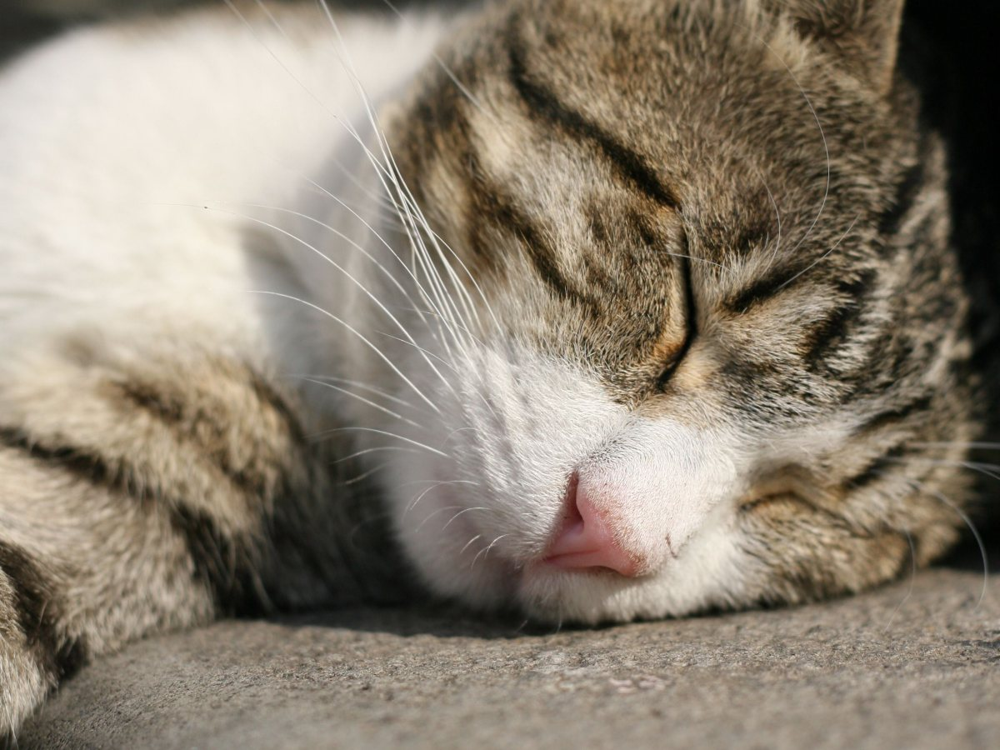
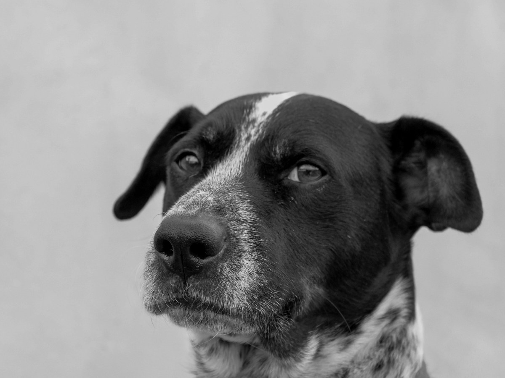
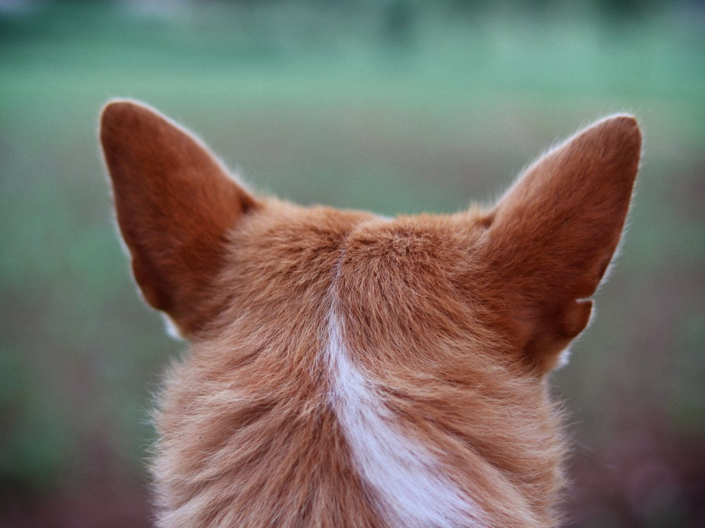
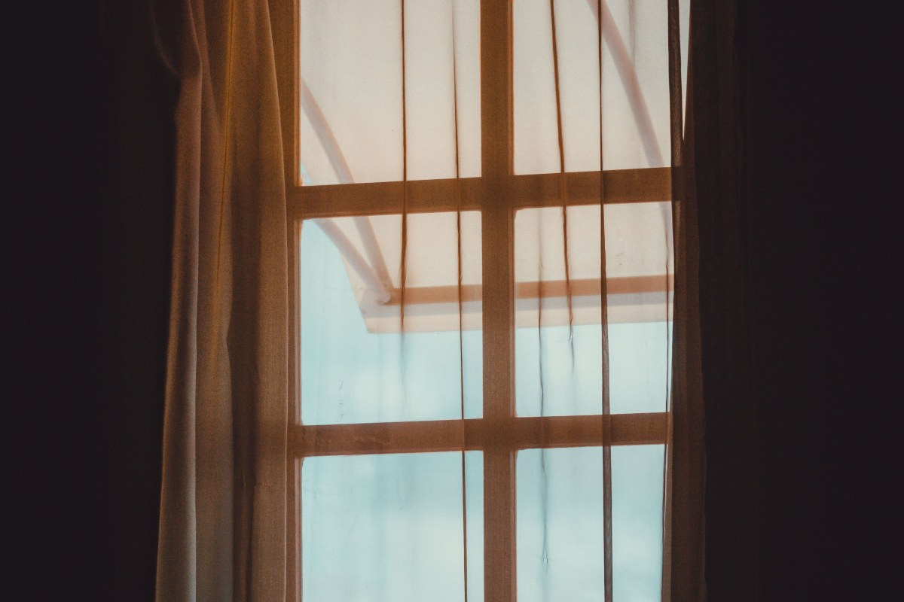
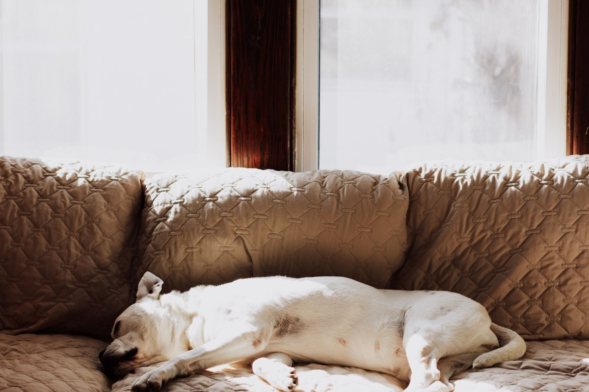
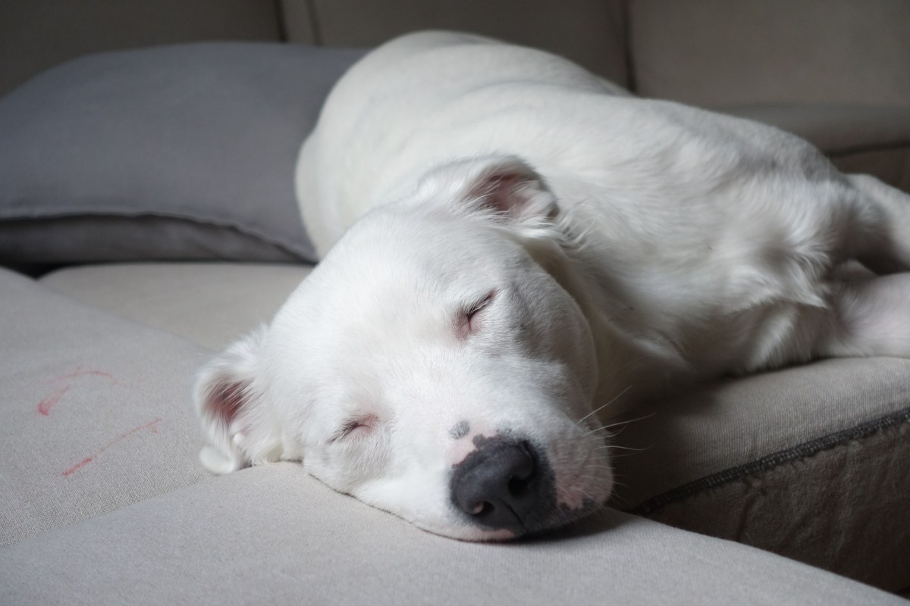
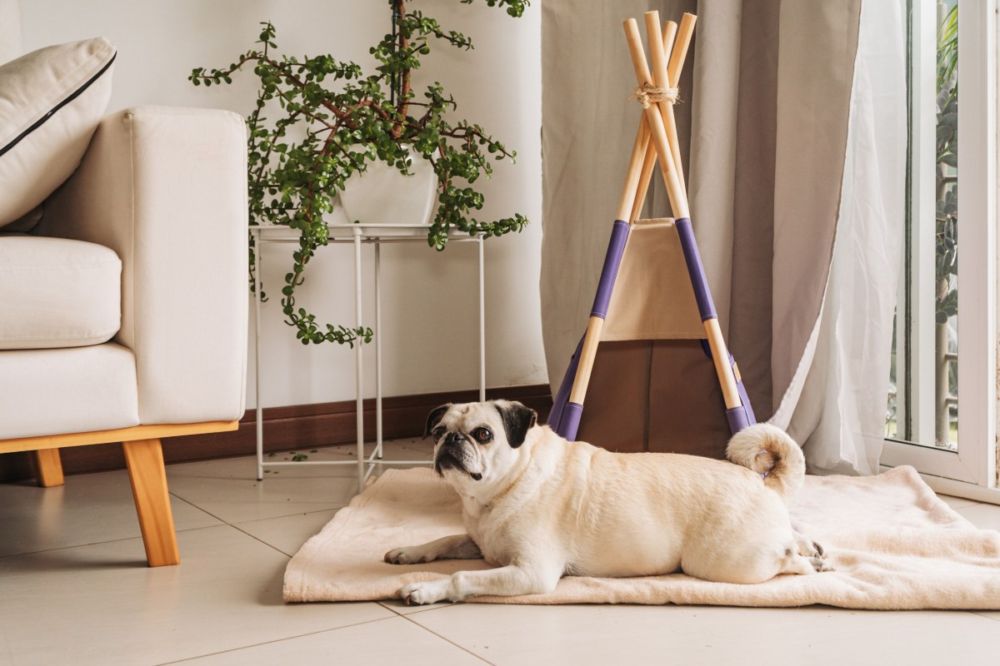

Puente Alto · veterinaria
Fuegos, sin susto
4,9 con 47 reseñas en Bajos de Mena. Qué hacer antes y esa noche con tu mascota.
- 4,9de promedio en Google
- 47reseñas
- 11:00abre, según su ficha de Google
- 0páginas: el dominio que enlaza Google hoy está libre
Diciembre y el 18
Año nuevo sin susto
Marca lo que ya tienes listo.
AntesLa semana previa
Esa nocheCuando empiezan
Si se asustaCon calma
Si el miedo es grande, hay opciones que se evalúan en consulta. Mejor antes de diciembre.
Pedir horaAfuera, ruido. Adentro, su lugar.
Servicios
Perros y gatos
-

Consulta
Con paciencia
Lo que más destacan las reseñas.
-

Gatos
Sin malos recuerdos
Con tiempo para que se calmen.
-
Vacunas
El calendario
Al día, antes de las fiestas.
-

Registro
Chip y placa
Ayudan con el Registro Nacional de Mascotas.
-
Cachorros
La primera visita
Para empezar bien.
-

Control
Orejas, patas y piel
Lo que no se ve en casa.
Los servicios los confirma la veterinaria; el registro de mascotas sale de una reseña.
Google manda a sukivet.cl, y ese nombre hoy está libre: cualquiera puede registrarlo.
Google y NIC Chile, al 16-09-2026
En casa
Los que se quedan tranquilos





Fotos de referencia: ninguna es de la veterinaria.
Dónde está
En Bajos de Mena
- Dirección
- Sargento Menadier 3054, Villa Estaciones Ferroviarias, Puente Alto
- +56 9 7162 0048
- Abre
- 11:00, según su ficha de Google
El sitio que Google muestra, sukivet.cl, no abre: el dominio ya no está registrado.
Sgto. Menadier 3054 Abrir en Google Maps
Para Veterinaria Sukivet
Qué es real y qué falta
Lo verificado
El 4,9 con 47 reseñas, la dirección, el WhatsApp, la apertura a las 11:00 y que sukivet.cl no existe hoy en NIC Chile.
Lo de ejemplo
La guía de fuegos, los servicios y todas las fotos.
Lo que falta
Volver a registrar sukivet.cl antes que otro, y publicar ahí una página propia.